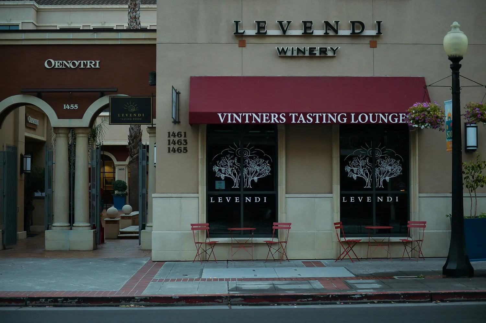

What a small winery can actually do with AI

Start where the money already is: the enquiries you are missing. Being findable when someone asks an AI assistant for a winery, and answering the ones who call after five, costs a fraction of vineyard technology and pays back first. The robotics can wait, and for most estates they should.
Why the AI conversation in wine country skips you
Every story about artificial intelligence in wine country is a story about the vineyard. Satellite imagery, canopy sensors, yield forecasting, sorting lines. It is genuine work and it is genuinely impressive, and almost none of it is written for an estate making a few thousand cases.
Angelo Camillo, who teaches wine business at Sonoma State, puts the shape of it plainly: small family operations are about 80% of the wine business in America, and his warning to them is blunt. “Those who cannot afford it will be left behind.”
If anything that understates how local the problem is. The Napa Valley Vintners publish the composition of their own valley in their fast facts: “95% of Napa Valley wineries are family-owned” and “80% produce fewer than 10,000 cases annually.” Two independent sources, one national and one local, arriving at the same figure from different directions. The estate that reads the technology coverage and concludes it was written for somebody else is not a minority case. It is four wineries in five.
There is a second number on that page worth sitting with. There are “more than 500 wineries in Napa County, together producing more than 1,000 wine brands.” A visitor asking for one recommendation is asking a question with a thousand possible answers, and they will hear perhaps three.
That is what makes Camillo’s sentence do damage. It is true about vineyard technology and it is read as true about everything, and the result is an owner who concludes the whole subject is for other people. It is not. The vineyard is the expensive end. There is a cheap end, nobody writes about it, and it is where the near-term money is.
What the technology has actually proved
Two things are worth holding at once.
The technology works. Growers using Agrology’s sensing report saving 16,000 gallons of water per acre, per growing season. Palmaz, up on Mount George, went further and engineered its own. Its Fermentation Intelligent Logic Controller monitors, in the winery’s own description, “three to four million points of temperature 10 times per second,” and throws the result onto a dome overhead through eight projectors, inside a cave eighteen storeys underground. That is not marketing. That is a family that spent years and a fortune building something specific to itself.
And it is out of reach. Tyler Klick of Redwood Empire Vineyard Management says it without decoration: “Currently, AI is too expensive to implement,” and notes the absence of clear return in yield or cost. Nick Claussen, a viticulturist at Wilbur-Ellis, adds the other half: “No level of technology will ever replace the need for boots on the ground.”
Both are right, and neither is talking about the thing that decides whether a stranger finds you this weekend.
Where a small estate’s money goes furthest
A vineyard sensor changes what happens to fruit you already own. Being findable changes how many people arrive. For an estate with a tasting room, a club and an allocation list, the second is the shorter road.
Here is what has actually changed. A visitor planning a weekend increasingly does not open ten tabs. They ask an AI assistant for a small producer near Yountville that takes walk-ins, and they get an answer: a name, with a reason attached. That answer is assembled from what is written about you in text a machine can read. Your own pages, your listings, anything anyone else has published about you.
The assembly is less forgiving than most owners assume. When Vercel and MERJ examined how the major AI crawlers behave, they found those crawlers fetch JavaScript files without executing them. A tasting menu that appears only once a script has run was not read. Neither was a booking widget, and neither was a beautifully set PDF.
So if your appellation, your varietals, your hours and your tasting fees live inside an image of a menu, none of it is in that answer. You are not ranked low. You are absent, and no amount of vineyard technology changes it.
The two questions worth answering first
Can a machine read what you sell? Open your visit page. Try to select the tasting fee with your cursor. If you cannot highlight it, it is a picture. The same goes for hours, appointment policy, whether you take walk-ins, and whether dogs are welcome. Every one of those is a question people put to an AI assistant, and every one is answerable only from text.
What happens to the enquiry that lands at seven? A tasting-room phone is staffed while the room is open. Enquiries do not respect that. The ones arriving after close go to voicemail and then to whoever answers first, which on a Saturday evening is the estate down the road with someone on the line.
Neither of those is a technology project. The first is an afternoon of rewriting a page so the facts are text. The second is a decision about coverage.
What to do this month
Three things, in order, none of which requires a rebuild.
One. Put the facts in writing. Appellation, varietals, tasting options and prices, hours, appointment policy, how to find you. As selectable text on your own pages, not baked into an image or a booking widget that loads after the crawler has left.
Two. Make your sources agree. Your site, your Google listing, the visitor bureau, the wine-trail directory, the aggregator you signed up with in 2019. Where two of them disagree about your hours, a model does not average them. It picks one, or it drops you.
Three. Decide what happens after five. Voicemail is a decision, not a default. So is an overflow service, and so is an automated receptionist that takes the details and hands off to a person in the morning. Choose deliberately, and know what the current answer is costing.
None of this is a cave. It is the part of the same subject a small estate can act on this month, and it is the part that pays first.
Key points
- Napa Valley Vintners: 95% of Napa wineries are family-owned and 80% produce fewer than 10,000 cases a year. Almost none of the AI coverage is written for them.
- The vineyard technology is real and works; it is also the expensive end, and it pays back over seasons.
- Being findable and being reachable cost a fraction, and pay back on the next enquiry.
- AI crawlers fetch JavaScript without running it. A tasting fee inside an image, a PDF or a late-loading widget is absent from the answer.
- Voicemail after five is a decision, whether or not anyone made it.
Questions people ask
Is this instead of vineyard technology, or before it?
Before it. Sensors, imaging and irrigation modelling are real and they work. They are simply the expensive end, and they pay back over seasons. Being findable and being reachable cost a fraction and pay back on the next enquiry. Do the cheap end first, because it funds the rest.
We are a tasting room, not a tech business. Is any of this for us?
The two things described here are a legible services page and a phone that gets answered after five. Neither is a technology project. Both are the difference between an enquiry that arrives and one that goes to whoever answered.
Our wine club is full and we sell out. Why bother?
Then this is about the years when you do not, and about who inherits your allocation list. A record that machines can read is slow to build and impossible to buy in a hurry. The moment to build it is while you do not need it.
Reptify Media · Journal
https://reptifymedia.com/journal/ai-for-small-wineries.html
Published